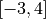
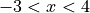

Calculus: Quarter Two#
Celebration of Knowledge#
2006, Free Response, Form B, #2

Let  be the function defined for
be the function defined for  with
with  and
and  , the first derivative of
, the first derivative of  , given by
, given by  . The graph of
. The graph of  is shown above.
is shown above.
Use the graph of
to determine whether the graph of is concave up, concave down, or neither on the interval  . Explain your reasoning.
. Explain your reasoning.On the interval
 , find the value of x at which f has an absolute maximum. Justify your answer.
, find the value of x at which f has an absolute maximum. Justify your answer.Write an equation for the line tangent to the graph of
at  .
.
2023, Free Response, #5
x |
0 |
2 |
4 |
7 |
|
10 |
7 |
4 |
5 |
|
|
-8 |
3 |
6 |
|
1 |
2 |
-3 |
0 |
|
5 |
4 |
2 |
8 |


The functions and  are twice differentiable. The table shown gives the values of the functions and their first derivatives at selected values of x.
are twice differentiable. The table shown gives the values of the functions and their first derivatives at selected values of x.
Let
 be the function defined by
be the function defined by  . Find
. Find  . Show the work that leads to your answer.
. Show the work that leads to your answer.Let
 be a differentiable function such that
be a differentiable function such that  . Is the graph of concave up or down at the point where
. Is the graph of concave up or down at the point where  ? Give a reason for your answer.
? Give a reason for your answer.
2015, Free Response, #6
Consider the curve given by the equation  .
.
Write an equation for the line tangent to the curve at the point
 .
.Find the coordinates of all points on the curve at which the line tangent to the curve at that point is vertical.
Evaluate
 at the point on the curve where
at the point on the curve where  and
and  .
.
2017, Free Response, #6

x |
|
|
-5 |
10 |
-3 |
-4 |
5 |
-1 |
-3 |
2 |
4 |
-2 |
3 |
1 |
-1 |
1 |
-2 |
0 |
0 |
-3 |
Let be the function defined by  .
.
Let be a differentiable function. The table above gives values of and its derivative  at selected values of
at selected values of  .
.
Let be the function whose graph, consisting of five line segments, is shown in the figure above.
Find the slope of the line tangent to the graph of
at  .
.Let
be the function defined by  . Find
. Find  .
.Let
 be the function defined by
be the function defined by  . Find
. Find  .
.
2015, Free Response, #5

The figure above shows the graph of , the derivative of a twice-differentiable function , on the interval . The graph of has horizontal tangents at ,  , and
, and  .
.
Find all x-coordinates at which f has a relative maximum. Give a reason for your answer.
On what open intervals contained in  is the graph of f both concave down and decreasing? Give a reason for your answer.
Find the x-coordinates of all points of inflection for the graph of f. Give a reason for your answer.
2023, Free Response, #6
Consider the curve given by the equation,

Show that,

Find the coordinates of a point on the curve at which the line tangent to the curve is horizontal, or explain why no such point exists.
Find the coordinates of a point on the curve at which the line tangent to the curve is vertical, or explain why no such point exists.
A particle is moving along the curve. At the instance when the particle is at the point
 , its horizontal position is increasing at a rate of
, its horizontal position is increasing at a rate of  units per second. What is the value of
units per second. What is the value of  , the rate of change of the particle’s vertical position, at that instant?
, the rate of change of the particle’s vertical position, at that instant?